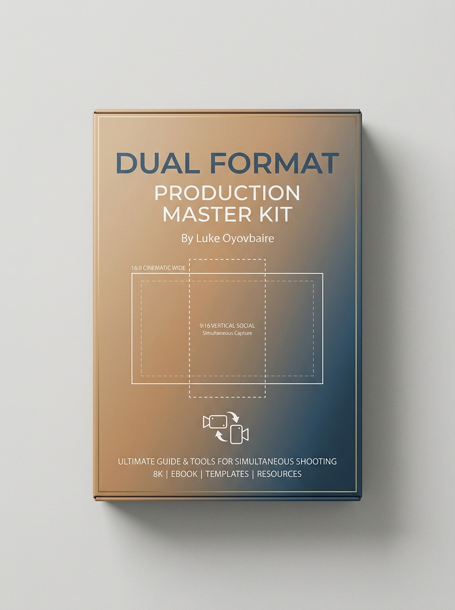

Shoot broadcast-quality horizontal and vertical video in a single take.
Eliminate post-crop quality loss, cut editing time by up to 60%, and deliver polished multi-platform content faster than 98% of creatives who still rely on inefficient, reactive workflows.

Tested where every single pixel matters.
I’m Luke Oyovbaire, Strategic Narrative Architect. I’ve worked on projects for brands including Guinness, Heineken, Google, AfricaMagic, MacArthur Foundation, Malala Fund, Heinrich Böll Stiftung—where every frame had to hold up across TV, social, and policy screenings.
When I kept losing quality in post-crop reels, I dug into studio-grade workflows and reverse-engineered a system that lets me shoot 16:9 and 9:16 simultaneously, without compromise.
This guide is the exact system I now use—and teach—to creatives who refuse to trade quality for convenience.
What’s Inside the Master Kit
Stop settling for post-production crops that destroy video quality. This comprehensive guide teaches you how to capture broadcast-quality 16:9 and 9:16 content in a single take, using professional workflows that major studios employ.
From pre-production scoping and client pricing through on-set camera configuration to multi-platform export, you'll master every step. The kit includes production-ready templates, monitor framing overlays, and dual-timeline editing workflows that streamline your entire process.
What's Included:
Complete End-to-End Production Workflow Guide
A comprehensive 59-page manual detailing pre-production planning, lens selections, sensor coverage, and simultaneous shooting protocols.
Professional Monitor Overlay Templates
Precision framing grids and safe-zone guides ready to load onto SmallHD, Atomos, or camera displays, plus printable field reference cards.
Dual-Format Camera Setup Configurations
Step-by-step camera rigging and sensor settings calibrated for mirrorless setups (Sony, Canon, Lumix) through high-end cinema packages (RED, ARRI, FX6/FX9).
Set Composition Strategies for Simultaneous Dual-Format
Master blocking techniques, subject positioning, and negative space management so your single take feels intentionally directed for both widescreen and vertical feeds.
Dual-Timeline Editing Templates & Best Practices
Streamlined timeline setups for Premiere Pro, DaVinci Resolve, and Final Cut Pro that cut timeline management and conform time by up to 60%.
Multi-Platform Export Settings & Optimization Guide
Exact bitrate, color-space, resolution, and audio profiles for broadcast TV, YouTube 4K, Instagram Reels, TikTok, and policy screening rooms.
Client Scoping Framework & Pricing Templates
How to package 'dual-format simultaneous delivery' as a premium service offering and quote clients higher fees while cutting your shooting hours in half.
Frequently Asked Questions
Everything you need to know before putting this system onto your camera.
“Can’t I just crop in post? It’s easier.”
“I don’t have high-end gear. Will this still work?”
“$15 feels too low for something this detailed.”
Upgrade your production workflow today.
One project where you avoid reshoots or charge a premium for dual-format delivery pays for this hundreds of times over.